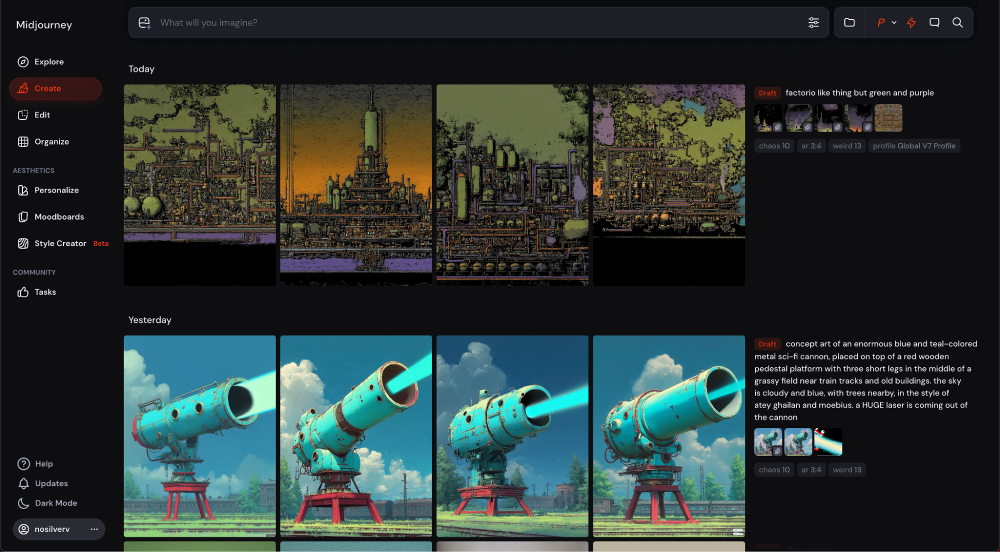
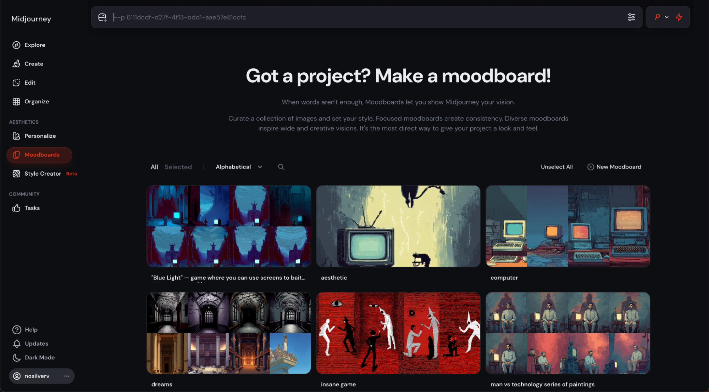
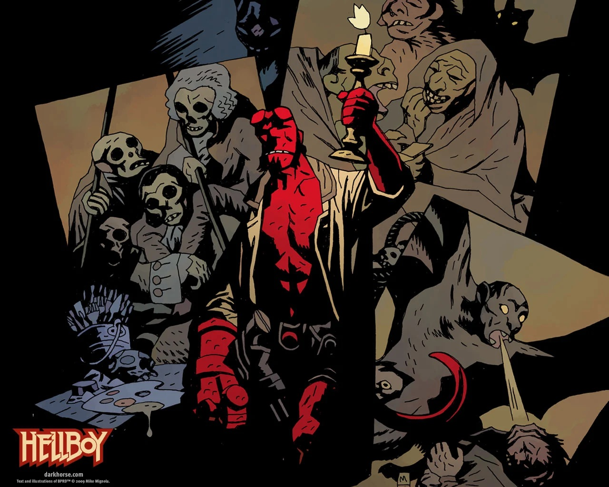
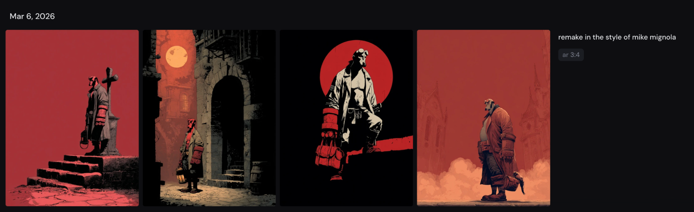
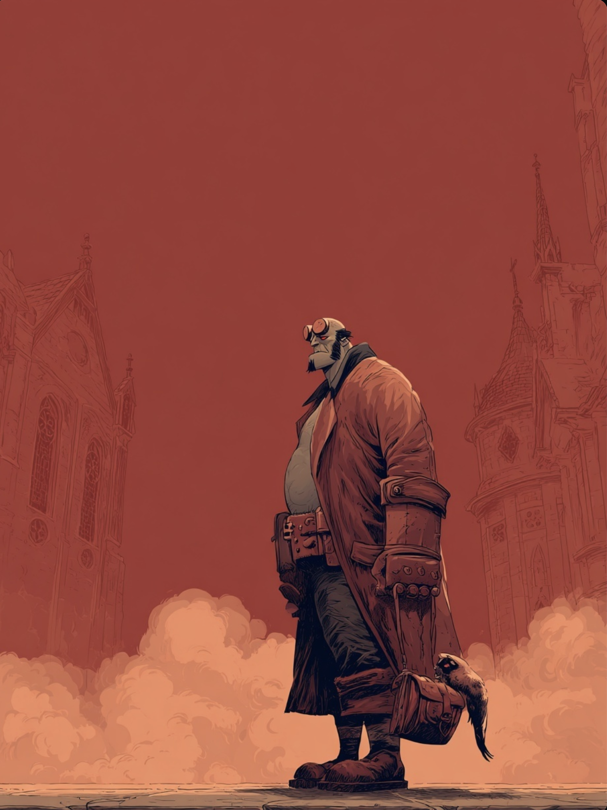
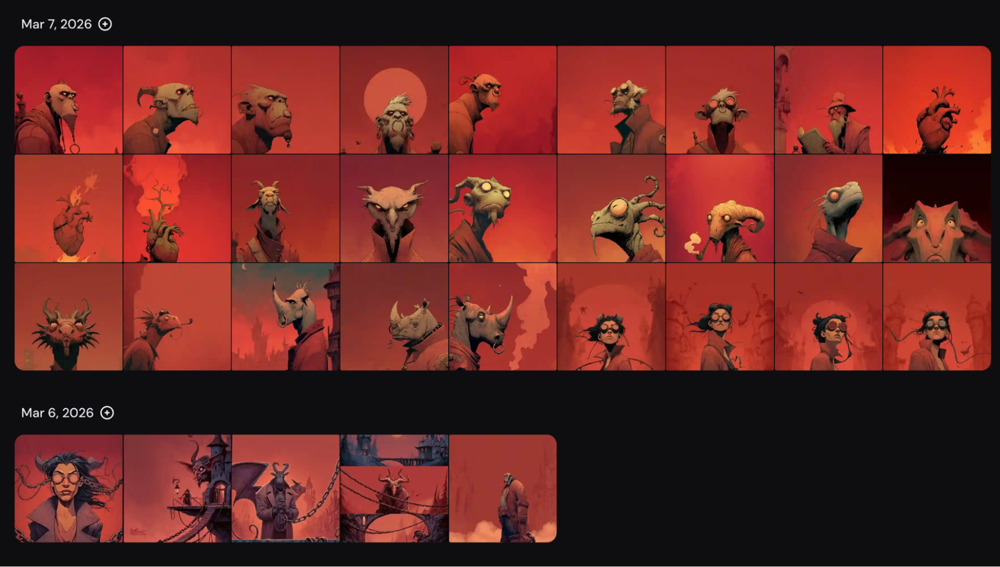
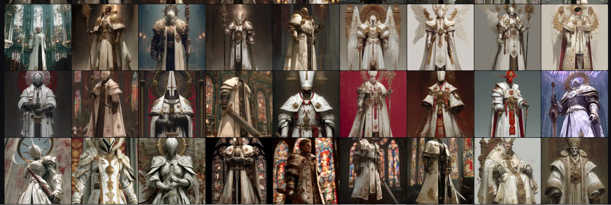
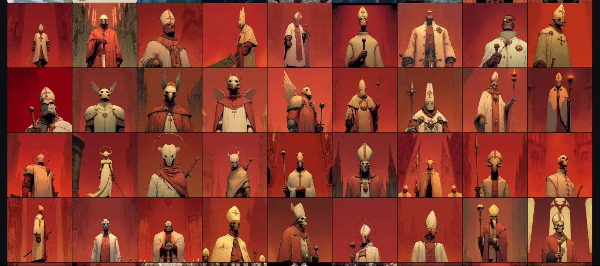

The Merge
I’ve talked about Midjourney but I haven’t talked about how I use it.
This is what Midjourney looks like when you open it:

Midjourney V7.
On the left hand side you see it has “moodboards”. Moodboards are a way of generating an aesthetic you want.

I’ve reappropriated them, as you can see above, as project folders.
The first project I attempted was what I called ‘Hellboy: RED!’. (I really enjoy having “codenames” for projects based on what was the original inspiration.)

This was back when I was still trying to find my way into understanding the potential of the platform. Mike Mignola, Hellboy’s creator, has a famously cool and unique style. Could I generate more stuff in this style I like so much?
Hellboy, Mike Mignola.
I tried to do it by giving Midjourney just a simple prompt: “remake in the style of mike mignola”. It generated the following four images.

That… didn’t really work.
However I really liked the fourth image it made.

This one. Midjourney
I liked the character design, the faintness behind it, I liked the red everywhere. It reminded me of blood. Maybe this character was in Hell and all around him was vaporized blood.
That gave me the idea for Hellboy:RED!. I was excited about it and kept making characters in this new style: first the various princes of Hell. At some point one came with what seemed like an animal head. I liked that and leaned into it. They all had animal heads now. One had a nose ring. Maybe that could be where their power was held? Now they all had animal heads and nose rings. It generated a girl too—maybe she could be the heroine? Hellboy is a trademarked character, after all.

But the project was too big. Too much. So I dropped it.
Next, still inexperienced, not knowing how to scope, I tried to mimic the aesthetic of DMC4 which I like a lot too. It’s basically Creepy Catholicism. Maybe I could create a modernization and extension to the game?

Again: too hard.
But as my eyes scrolled through the creations of one project and the other the idea came to me: perhaps I could put these together? Sure, extending the game will be impossible, but maybeI could reappropriate the game characters for the… comic that was forming in front of my eyes?

Hellboy: RED! + DMC4—Extended.
That worked. It felt like a “natural save point”. I had remixed two existing things I liked into one new thing that — as far as I knew, didn’t exist.